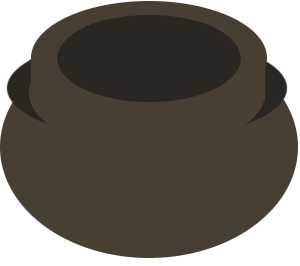

Em "Torre Flamel" o jogador é um mago que deve usar os ingredientes para preparar suas poções.
No começo do jogo você possui 3 ingredientes e seu objetivo é combiná-los para criar novos ingredientes e poções!
Ingrediente
caldeirão
Cada ingrediente criado poderá ser usado para criar novos ingredientes e poções. Será que você consegue descobrir todos os ingredientes e poções?